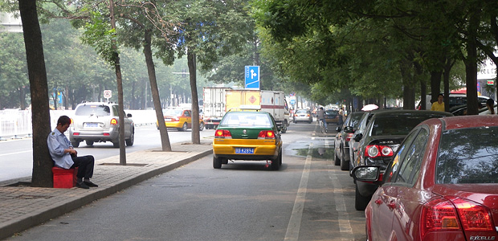

最近又开始骑车上班了，一次来回20公里，感觉像又回到了中学时代。 现在都提说什么绿色出行，为城市环保做贡献。在帝都不知道有多少这样的人。
在电台和电视台里呼吁的主持人们，大部分估计都不是骑车出行吧。据观察，路上骑车的人数不算多，类型主要也就几种，看来北京真不是一个适合骑车的地方。地方太大，公交车便宜，另外还有以下一些原因。
首先是空气太糟糕。遇到雨后还好点，空气稍微湿润清新。而平日经常是，随着汽车慢慢活跃在城市里，空气中就会弥漫着厚厚的尾气。如果你在三环，四环沿线骑，基本就是跟着汽车后面吸尾气的，所以有些骑车的人会带上口罩。另外很多街上的绿化远不如南方城市，所以对阳光和风沙很多时候也没有什么减弱作用。骑车上班选一条好的路线非常关键。
其次是道路。其实北京很多自行车道很宽，比国外的都宽，一般是双车道。但这当年适应自行车大国的设计，在今天却带来反面影响。现在北京汽车多得都没地方停，你自行车道不是宽嘛，那我就拿一半当停车场使，全停着小汽车。而另一半时不时还会有车开进来。
另外一方面现在骑车的人少了，行人也就没什么意识，时不时都占着自行车道走。再者还有些地方自行车道和汽车道没有隔开，这时你就得时刻注意身后的公交车入站。总之一路上是危机四伏，必须时时眼观四方，骑车一族是马路上的弱势群体。
经常有口号喊：环保，从我做起。其实政府的潜台词都是：环保，你先做起吧。你希望大家骑车绿色出行，但是你作为城市的管理者，是否有给这些人创造了良好的环境？我这一路就没感受到帝都对骑车一族的重视和尊重，又如何能感受到你们倡导环保的决心。
前些日子去苏州看到了城市里出租自行车的系统，是用公交卡刷卡租车的，而且点设得比较多。我们没用过，所以不知道这个实际的用处，但表面上看应该比北京的好很多。北京在奥运期间也购买过一批自行车用于市民出租，设在一些地铁站门口，我没怎么用过，据说是要交押金什么的，比较麻烦。现在经常经过一些租车的地方，还能看到那批挤得歪歪倒倒紧紧密密的自行车，我就知道无非又是一次形式主义的工程罢了。
